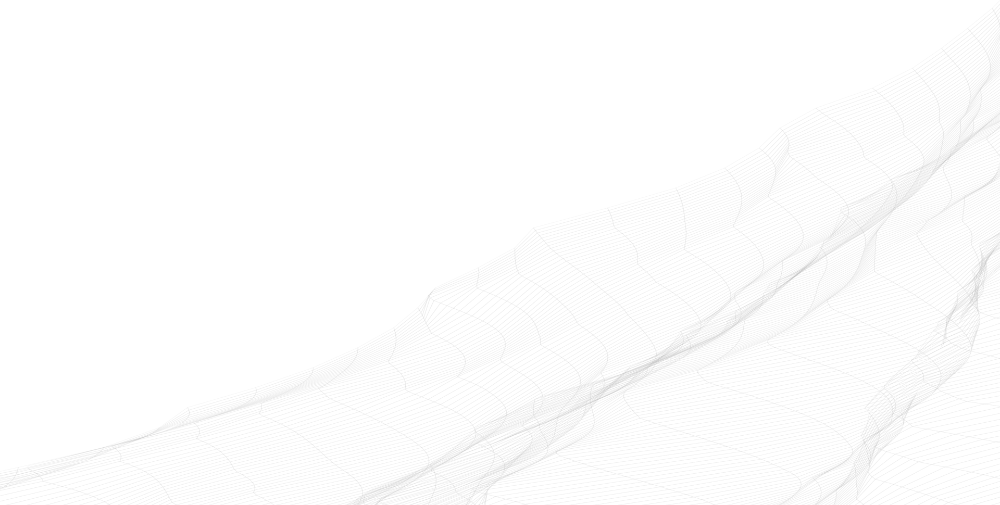
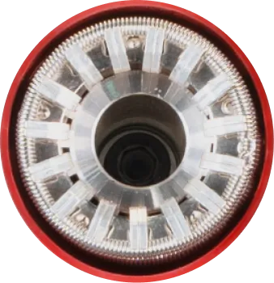

Страница не найдена
:(
Возможно, она была удалена, или Вы просто неверно указали адрес страницы.
Перейти на главную

{ "id": "mp-404-related", "title": "Еще продукция", "items": [ { "title": "Оборудование для производства ячеек КРУ и КСО", "picture": "assets/images/layout/pages/sp-product-2/related/01.png", "href": "ap-products.html" }, { "title": "Вакуумные выключатели серии ВВ/FE", "picture": "assets/images/layout/pages/sp-product-2/related/02.png", "href": "sp-product-2.html" }, { "title": "Вакуумные выключатели наружного исполнения серии ВВН/FE", "picture": "assets/images/layout/pages/sp-product-2/related/03.png", "href": "#" }, { "title": "Вакуумные контакторы серий ВК/FE и ВК/FM", "picture": "assets/images/layout/pages/sp-product-2/related/04.png", "href": "#" }, { "title": "Выключатели нагрузки автогазовые серии ВНА/W-10", "picture": "assets/images/layout/pages/sp-product-2/related/05.png", "href": "#" }, { "title": "Разъединители серии РВ/W-10", "picture": "assets/images/layout/pages/sp-product-2/related/06.png", "href": "#" }, { "title": "Воздушные автоматические выключатели серии WGS", "picture": "assets/images/layout/pages/sp-product-2/related/07.png", "href": "#" }, { "title": "Автоматические выключатели в литом корпусе серии WGM", "picture": "assets/images/layout/pages/sp-product-2/related/08.png", "href": "#" } ] }